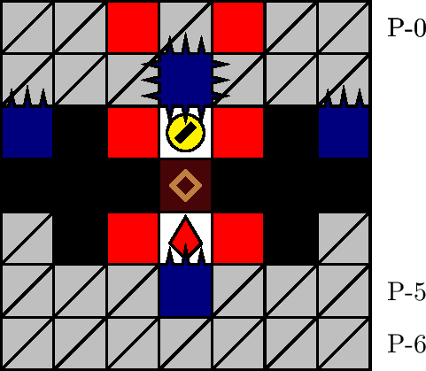

一般指針
バリアを犠牲に

指針
極めて低寿命（25 カウント以下）のときは，バリアの保持を無視してザクロを取得します．
解説
バリアは老衰によって消滅します．特に，老衰までにバリアを消費しても消費しなくても，老衰後にバリアは残りません．そこで，寿命が極めて少ないときは，事故によってバリアを消費してでも，ザクロの取得を目指すことが推奨されます．
バリアを利用したザクロ取得の典型例は， 700 m型のエリア・バリケードにおける状況です．エリア・バリケード（図 3.6.3.1）を標準状態で事故なく通過するには，狭窄の塊 P-(3, 0) を 2 回に渡って吸引する必要がありました（「エリア・バリケード」を参照）．しかし，低寿命かつバリア状態時は，直上の四針の針判定を回避せずに塊を吸引し続けるべきです: 実際，もとの指針ではザクロを取得する前に老衰する恐れがあるうえ，そのまま老衰すると結局バリアを取得しなかった状況と等しくなります．バリアを消費してザクロを取得すれば，残機を消費することなく潜行を継続できます．（なお，狭窄の通過は 2 回目の刺突が起こる前までに行います．通過が 2 回目の刺突に間に合わなければ，吸引間隔が長すぎなので，より短くなるよう調整します．）
寿命が極めて少ないことの目安は，寿命が 25 カウント以下であることです．寿命が 25 カウント以下の間は，老衰を予告する音が鳴ります．